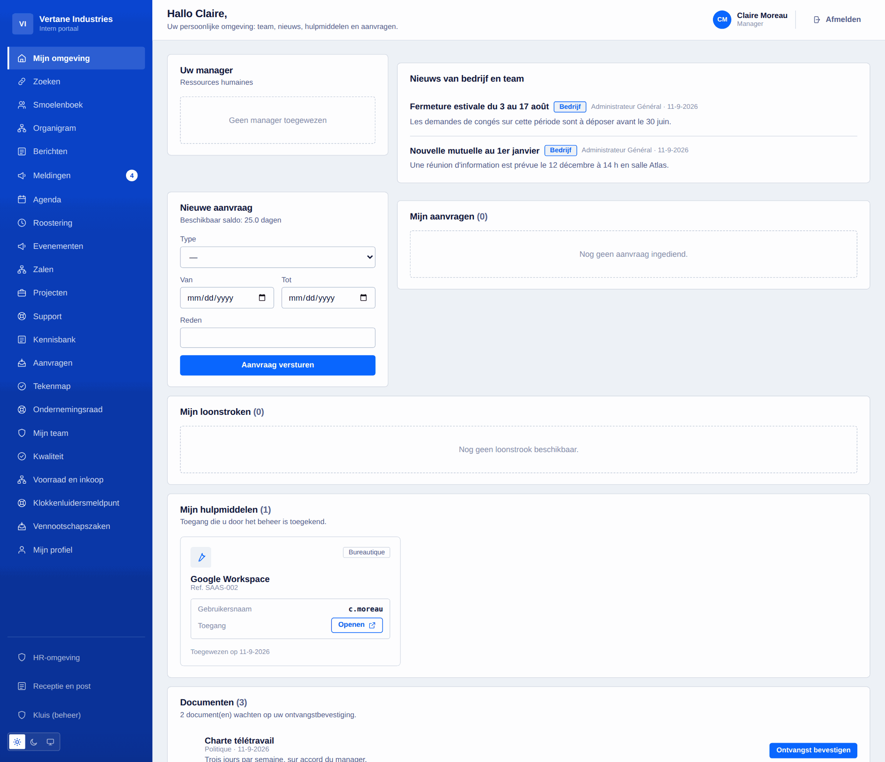
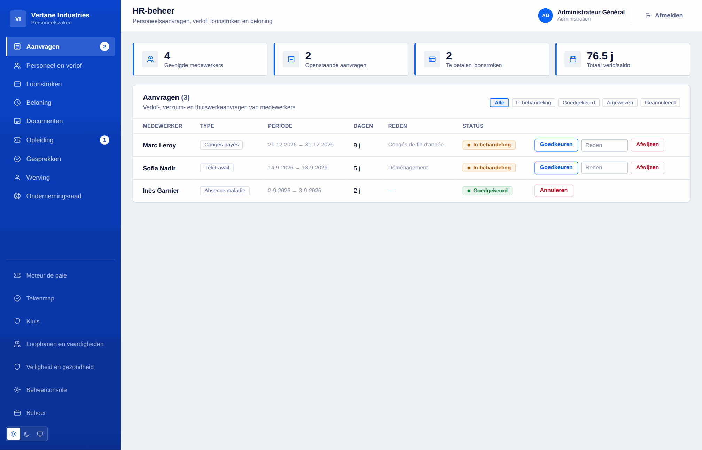
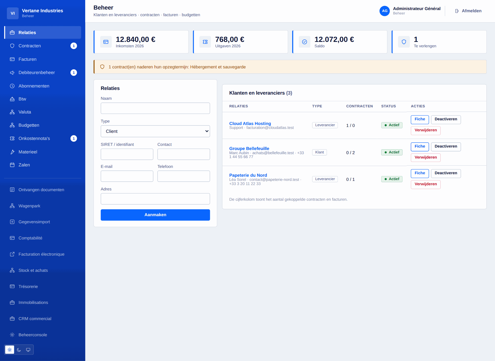
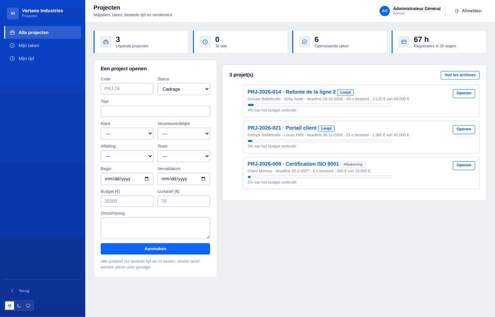
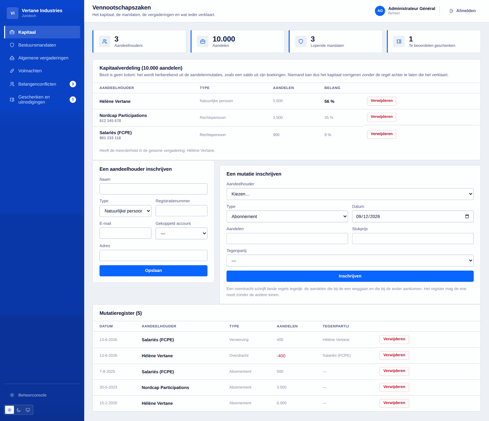

Alles wat Toutadmin kan
De volledige lijst, domein per domein. Elke regel is opgeleverde en geteste code, geen voornemen.
121 · Functies met «module» worden vanuit de console aangezet wanneer u ze nodig hebt.
Fundament en organisatie
Wat de rest draagt: de accounts, de koppelingen en het vocabulaire dat alle werkruimten delen.
- Accounts en stapelbare rollen: beheerder, HR, financiën, IT, vertrouwenspersoon meldingen
- Leidinggevende afgeleid uit de werkelijke aansturing, nooit met de hand toegekend
- Afdelingen en teams, meerdere leidinggevenden per perimeter, koppelingen bij elk verzoek herlezen
- Visueel organigram, leiding inbegrepen, en de mensen die nergens gekoppeld zijn
- Adresboek met zoeken en filters, zichtbaarheid enkel door het beheer gestuurd
- Interne berichten, en professioneel adres door het beheer ingesteld
- Globale zoekfunctie aan de bron gescheiden: wat u niet mag zien, wordt niet gezocht
- Meldingencentrum per persoon, met leesbevestiging
- CSV-massa-import: gecontroleerde voorvertoning, alles-of-niets wegschrijven
- Installatiewizard, instellingen van de instantie, zeven activeerbare modules
- 16 talen, 3 paletten, thema licht/donker/systeem, meegroeiende interface

Werkruimte van de medewerker
De pagina die iedereen 's ochtends opent: wat hem aangaat, en niets anders.
- Persoonlijk dashboard: leidinggevende, nieuws, aanvragen, te bevestigen documenten
- Verlof, recuperatie, afwezigheid en telewerk: werkdagen berekend, weekends uitgesloten
- Actueel verlofsaldo, geschiedenis van de gemotiveerde correcties
- Loonbrieven raadpleegbaar en vijftig jaar in de kluis bewaard
- Persoonlijke agenda en gedeelde teamagenda
- Weekplanning, wachtdienst, permanenties
- Toegewezen tools met eigen gebruikersnaam — geen enkel extern wachtwoord bewaard
- Profiel: foto, voorstelling, telefoon, taal, wachtwoord, alle sessies sluiten
- Tijdregistratie met chronometer voor freelancers, slechts één lopend tegelijk
- Verklaring van belangen en geschenken, enkel voor uzelf zichtbaar

Human resources
Het dossier van de medewerker, van aankomst tot vertrek, met de vervaldata die erbij horen.
- Goedkeuring met afname van het saldo, gemotiveerde weigering, annulering die terugstort
- Loonbrieven: aanmaak, opvolging van de betaling, generatie in batch
- Bedrijfsdocumenten met ontvangstbevestiging op naam
- Opleiding: catalogus, sessies, inschrijvingen, kost en duur
- Jaargesprekken: campagne, leidraad, verslag
- Aankomst en vertrek: opgevolgde checklists, verantwoordelijke en termijn per taak
- Competenties en bevoegdheden, met hernieuwingsdatum en tijdige waarschuwing
- Individuele gesprekken: gedeelde samenvatting, notities van de leidinggevende apart
- Digitale kluis ook na vertrek bereikbaar, documenten verzegeld door hun vingerafdruk
- Eenvoudige elektronische handtekening: geordend circuit, vingerafdruk, zegel, attest
- Contracten van bepaalde duur: het account sluit zichzelf op de dag zelf

Werving en talent
Van sollicitaties tot de eerste dag, zonder rekenblad ertussen.
- Vacatures en sollicitaties per fase opgevolgd
- Cv-ontvangst: PDF, DOCX of tekst, buiten de repository weggeschreven
- Extractie van de inhoud en doorzoekbare cv-databank
- Gewogen criteria, score, drempel, rangschikking van de sollicitaties
- Een aangenomen kandidaat gaat rechtstreeks naar het onthaaltraject
- Interne enquêtes en sociale barometer, anoniem door hun opbouw
- Onder vijf antwoorden wordt geen enkel resultaat getoond

Gezondheid, veiligheid en ondernemingsraad
De verplichtingen die op papier moeten staan, en zichzelf in herinnering brengen.
- Risicoanalyse: werkeenheden, gevaren, quotering, maatregelen, gedateerde herziening
- Register van arbeidsongevallen en bijna-ongevallen, dagen afwezigheid
- Beschermingsmiddelen: uitgifte op naam, geldigheidsduur, vervanging
- Medische onderzoeken: aanwerving, periodiek, werkhervatting, op verzoek
- Ondernemingsraad: verkiezingen, kiezerslijst, anonieme stemming, mandaten en hun einde
- Vergaderingen van het orgaan, voordelen en diensten voor de medewerkers
- De beheerruimte sluit zichzelf wanneer het mandaat afloopt

Financiën en beheer
De derden, de contracten, het geld dat binnenkomt en dat buitengaat.
- Klanten en leveranciers, volledige fiche: contactpersonen, contracten, facturen
- Contracten en vooral opzegtermijnen: de uiterste opzegdatum wordt berekend en gemeld
- Facturen in beide richtingen, totaal berekend, achterstand afgeleid uit de vervaldag
- Budgetten per afdeling en boekjaar, verbruik automatisch geaggregeerd
- Onkostennota's: indiening, goedkeuring, terugbetaling — nooit het een zonder het ander
- Nalevingsdocumenten van derden, gedateerd en vijfenveertig dagen vooraf gemeld
- Gescoorde leveranciersbeoordelingen: de laatste telt, niet het gemiddelde
- Meerdere valuta met de koers vastgezet bij uitgifte van elk stuk
- Terugkerende facturatie: het abonnement is de mal, de factuur is het stuk
- Automatisch uitlezen van ontvangen facturen en IMAP-ophaling van een boekhoudmailbox

Boekhouding, loon en btw
Modules, standaard uit, die aangaan wanneer u ze nodig hebt.
- Dubbele boekhouding: rekeningstelsel, dagboeken, proefbalans, grootboek
- Een niet-sluitende boeking wordt geweigerd, en de melding zegt met hoeveel
- Een factuur wordt met één klik een boeking; CSV-export voor uw kantoor
- Loonmotor: instelbare schalen, bruto naar netto, werkgeversbijdrage, werkgeverskost
- Gedetailleerde loonbrief regel per regel, generatie in batch, simulator
- Btw-aangiften: verschuldigd, aftrekbaar, verdeling per tarief, overdraagbaar tegoed
- Een ingediende aangifte wordt niet herrekend: het is een stuk, geen dashboard
- E-facturatie: controle EN 16931 en export van de CII-XML
- Treasury: rekeningen, bewegingen, aansluiting, prognose op twaalf weken
- Vaste activa: lineaire en degressieve afschrijving, netto boekwaarde

Aankoop, voorraad en invordering
Wat besteld wordt, wat toekomt, wat gefactureerd wordt — en wat men ons verschuldigd is.
- Aankoopaanvragen goedgekeurd door de leidinggevende, daarna door financiën boven de drempel
- Bestelbonnen, ontvangsten en drievoudige aansluiting: besteld, ontvangen, gefactureerd
- Meer ontvangen dan besteld wordt geweigerd; een factuurafwijking wordt benoemd, niet geblokkeerd
- Artikelen, bewegingen, meldingsdrempel: de voorraad is de som van de bewegingen
- Een regel gekoppeld aan een artikel gaat bij ontvangst meteen de voorraad in
- Ouderdomsbalans van klanten per achterstandsklasse
- Getrapte aanmaningen: herinnering, aanmaning, ingebrekestelling, volgens wat al verstuurd is
- Elke aanmaning vastgelegd met haar niveau en datum

Projecten, tijd en rendabiliteit
Weten waar een project staat, en wat het werkelijk gekost heeft.
- Projecten gekoppeld aan een klant, een afdeling, een team en een verantwoordelijke
- Gedateerde mijlpalen en taken in kolommen per status, met prioriteit en raming
- Tijd geboekt op project en taak, hoogstens 24 u per invoer
- Rendabiliteit: uren, kost tegen uurtarief, resterende marge, verbruikt budgetaandeel
- Drie rechtenkringen: het beheer, de verantwoordelijke, de leden
- Tijd per persoon en gezondheid van de projecten op het directiedashboard

Support en kennis
De interne en klantvragen in één circuit, en antwoorden die blijven.
- Interne en klantentickets, prioriteit, herkomst, toewijzing
- Termijn voor eerste antwoord afgeleid uit de prioriteit, herrekend vanaf de opening
- Interne notities onzichtbaar voor de aanvrager, en niet geteld als antwoord
- Gescheiden per categorie: een HR-vraag verlaat HR niet
- Kennisbank per categorie, zoeken in volledige tekst, instelbaar bereik
- Indicatoren: openstaande tickets, te laat, gemiddelde termijn

Operations en facilitair
De planning, de kwaliteit, de zalen, de voertuigen, het onthaal.
- Planning per persoon en per dag: shiften, wachtdienst, permanenties, telewerk
- Overlapping of reeds toegestane afwezigheid: het blok wordt bij het aanmaken geweigerd
- Herbruikbare beurtrollen, nachtshiften, publicatie van de week
- Wie op dit moment van wacht is, met zijn nummer
- Kwaliteit: afwijkingen, grondoorzaken, corrigerende acties en doeltreffendheidscontrole
- Interne audits: vaststellingen, synthese, een vaststelling verheven tot afwijking
- Toegewezen en teruggenomen uitrusting, met de geschiedenis van de houders
- Zalen en reservaties, overlapping geweigerd met vermelding van wie ze bezet
- Wagenpark: onderhoud, technische controle, verzekering, schadegevallen, kilometerstand
- Onthaal: bezoekersregister, lijst van aanwezigen, inkomende en uitgaande post

Directie en governance
Waar de directie naar kijkt, en wat ze beslist.
- Dashboard: personeelsbestand, afwezigen, gefactureerd, marge, loonmassa, kas, supportlast
- Doelstellingen en sleutelresultaten, elk op zijn eigen schaal, ook dalend
- Vergaderingen: uitnodiging, agenda, aanwezigheden afgetekend, verslag
- Register van beslissingen met hun motief — wat men twee jaar later zoekt
- Toevertrouwde acties met houder en termijn, gekoppeld aan hun beslissing
- Risicoregister: bruto en restquotering, 5 × 5-matrix, behandeling, herziening
- Bedrijfsevenementen: capaciteit, automatische wachtlijst, aftekenlijst, budget
- Vervaldata uit alle werkruimten in één gesorteerde lijst

IT en ontwikkeling
Het softwarepark, de toegangen, de incidenten, en wat het team oplevert.
- Softwarepark: licenties als beperking beheerd, geannualiseerde kost, hernieuwingen
- Toegangsherziening: eerst de gesloten accounts, daarna de beheerdersrechten
- IT-incidenten met tijdstip, en werkelijk gemeten gemiddelde hersteltijd
- Dienstencatalogus: kritikaliteit, verantwoordelijke, repository, documentatie
- Register van opleveringen per omgeving en leveringsindicatoren
- Back-ups: uurlijks archief, geverifieerde integriteit, herstel, externalisatie
- Lees-REST-API met scopes, ondertekende uitgaande webhooks
- Volledige export van de instantie als JSON, documenten inbegrepen, geheimen uitgesloten

Compliance, vennootschapsrecht en persoonsgegevens
Wat een bedrijf moet kunnen bewijzen, gaandeweg bijgehouden.
- Aandeelhoudersregister: bezit afgeleid uit de bewegingen, overdracht in twee poten geboekt
- Bestuursmandaten met duur, herroeping en vooraf gemeld einde
- Algemene vergaderingen: quorum in aandelen, besluiten, stemmen, notulen
- Volmachten: voorwerp, plafond, duur, gemeld einde
- Belangenconflicten en geschenken: ieder verklaart voor zichzelf, het beheer onderzoekt
- Versleuteld intern meldkanaal, aangeduide vertrouwenspersonen, anonieme opvolging via code
- Auditlogboek met tijdstip, exporteerbaar en verzegeld door ketening van vingerafdrukken
- AVG: verwerkingsregister, geëxporteerd inzagerecht, beredeneerde wissing
- Instelbare goedkeuringscircuits: formulieren, drempels, goedkeurders per functie

Ontbreekt er iets?
Zeg het ons. Het product groeit in schijven, en de vragen van de bedrijven die het gebruiken gaan voor.
Begin gratis, verander van formule wanneer u groeit
Onder vijf medewerkers is alles gratis. Daarboven € 5 per medewerker per maand — degressief vanaf tweehonderdvijftig — of € 10.000 eenmalig voor de levenslange licentie. Geen bankkaart om te proberen.